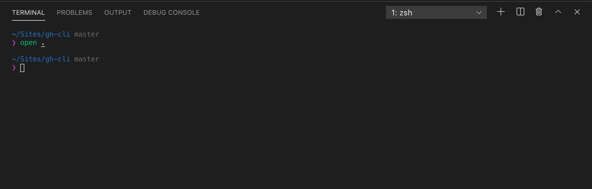
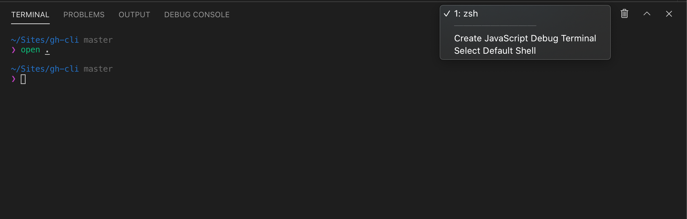

GitHub with CLI (Terminal)
Voordat je begint aan deze walktrough is het belangrijk dat je de volgende software download. GitHub Desktop: Download hier Visual Studio Code: Download hier
Maak een nieuwe repository aan.
Bekijk de video hoe je vanuit GitHub.com een nieuwe repository aan maakt. Belangrijk zorg ervoor dat de repository op public staat.
Open (lokaal) project in VS Code
Ergens op de je computer heb je een mapje staan met je toekomstige website/app. Open deze map in Visual Studio Code, in het voorbeeld zie je een leeg mapje.
Open Terminal in VS Code
We gaan met de Terminal werken in VS Code. Open een nieuwe Terminal via het menu.
Voor Windows gebruiker, zorg ervoor dat je in terminal Git Bash gebruikt. Lees hier meer.. Of zie de screenshots onder de video.
Van shell veranderen in VS Code kan via je Terminal window, rechtssboven. Dit is vooral aan te raden voor Windows gebruiken. Dan werken namelijk alle commando's in de volgende stappen. Zie de screenshots.
 
Git Init
Voordat je lokale mapje kan worden gepushed naar een remote (een plek waar je bestanden worden bewaard en getraceerd, in dit geval op Github, kan ook een andere externe server zijn). Zal je eerst je project moeten starten door de commando git init.
Zodra je dit hebt gedaan kan je code kopiëren vanuit je nieuw aangemaakte repository op GitHub. Het commando begint altijd met git remote add, met daarachter het adres van de remote.
Belangrijke commando's
git initgit remote add+ adres
Clear Terminal
Om die ellenlang tekst in je terminal op te ruimen gebruiken we het volgende commando: clear
Gebruik dit tussendoor als je een "leeg" terminal scherm wilt hebben.
Git Add, Git Commit & Git Push
In deze stap gaan we door de basics van git, een stap die we vaak zullen herhalen.
We gaan nu een nieuw , untracked, bestand toevoegen. Deze gaan we op laten nemen in git. Om dit te doen gebruiken we het commando git add nadat we een bestand hebben, aangemaakt, bewerkt en opgeslagen.
We voeren na git add de bestands naam om aan te geven welk bestand we willen toevoegen.
Om te checken welke bestanden nieuw, gewijzigd of verwijderd zijn. Gebruiken we het commando git status.
Zodra we alle veranderingen hebben toegevoegd. Gaan we committen aan git. Zodat de veranderingen daadwerkelijk worden opgeslagen en een vast punt in onze git history krijgen. Daarvoor gebruiken het volgende commando: git commit -m "commit message"
We kunnen commit message vervangen door een korte beschrijven van wat we hebben gedaan. Meestal gebruiken we hier actieve werkwoorden voor. Zoals: added, deleted, fixed etc. etc.
Zodra je dit hebt gedaan push je alle veranderingen naar de remote. Hiervoor gebruik je het commando git push. De allereerste keer zal je een melding krijgen dat je ook een branch moet kiezen. Neem gewoon het commando over wat je in de terminal ziet verschijnen. Je kan nu op GitHub zien dat je code is gepushed.
Let op: het kan zijn dat er om een Github Username & Password wordt gevraagd tijdens het pushen, type gewoon je paswoord in van GitHub, dit zie niet verschijnen in je terminal
Belangrijke commando's
git statusgit addgit commit -m "commit message"git push
GitHub Pages
Om GitHub Pages te activeren zal je in de settings van je repository de optie moeten aanvinken. Open je settings rechtsboven in het menu van je repository. Scroll een heel stuk naar beneden. Daar vind je de optie om GitHub Pages aan te zetten. (Belangrijk zorg ervoor dat je repository op public staat). Wacht enkele momenten, de server van GitHub zullen je bestanden zo snel mogelijk publicere (beetje geduld). Nu heb je een website gepubliceerd op GitHub. Klik op URL die verschijnt in je settings pagina onder het kopje GitHub Pages.
Git Add (everything), Git Commit, Git Push
Zoals al eerder aangegeven zijn dit stappen die je zal herhalen als je aan je project werkt in git. Allereerst gaan we veel wijzigen aanbrengen en deze allemaal tegelijk tracken. Om eerst te checken wat onze status is, gebruiken we git status.
Om alles in één keer te tracken doen we git add ., het is belangrijk om een . achter git add te zetten. Op deze manuier kunnen we alles in één keer tracken. Vervolgens ga je weer committen met git commit -m "commit message" en gebruik je git push om naar je remote te uploaden, in dit geval GitHub.
Je wijzigen zullen wellicht niet meteen voor overgenomen door GitHub Pages. Het beste is om even hard te refreshen met je browser. Vaak worden de wijzigen na enkele momenten dan door gevoerd GitHub Pages.
Enjoy GitHub & publiceren via GitHub Pages!!